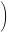
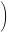

Next: The original model-free gradient Up: Optimisation equations for the Previous: Optimisation equations for the Contents Index
In the original model-free analysis of Lipari and Szabo (1982a) the correlation function C(τ) of the XH bond vector is approximated by decoupling the internal fluctuations of the bond vector CI(τ) from the correlation function of the overall Brownian rotational diffusion CO(τ) by the equation
| C(τ) = CO(τ)⋅CI(τ). | (15.57) |
The overall correlation functions of the diffusion of a sphere, spheroid, and ellipsoid are presented respectively in section 15.9.1 on page ![[*]](crossref.png) , section 15.10.1 on page , and section 15.11.1 on page .
These three different equations can be combined into one generic correlation function which is independent of the type of diffusion.
This generic correlation function is
, section 15.10.1 on page , and section 15.11.1 on page .
These three different equations can be combined into one generic correlation function which is independent of the type of diffusion.
This generic correlation function is
CO(τ) =   ci⋅e-τ/τi, ci⋅e-τ/τi, |
(15.58) |
where ci are the weights and τi are correlation times of the exponential terms. In the original model-free analysis of Lipari and Szabo (1982a,b) the internal motions are modelled by the correlation function
| CI(τ) = S2 + (1 - S2)e-τ/τe, | (15.59) |
where S2 is the generalised Lipari and Szabo order parameter which is related to the amplitude of the motion and τe is the effective correlation time which is an indicator of the timescale of the motion, albeit being dependent on the value of the order parameter. The order parameter ranges from one for complete rigidity to zero for unrestricted motions. Model-free theory was extended by Clore et al. (1990) to include motions on two timescales by the correlation function
| CI(τ) = S2 + (1 - S2f)e-τ/τf + (S2f - S2)e-τ/τs, | (15.60) |
where the faster of the motions is defined by the order parameter S2f and the correlation time τf, the slower by the parameters S2s and τs, and the two order parameter are related by the equation S2 = S2f⋅S2s.
The relaxation equations of Abragam (1961) are composed of a sum of power spectral density functions J(ω) at five frequencies. The spectral density function is related to the correlation function as the two are a Fourier pair. Applying the Fourier transform to the correlation function composed of the generic diffusion equation and the original model-free correlation function results in the equation
The Fourier transform using the extended model-free correlation function is
The relax user manual (PDF), created 2020-08-26.

 +
+  .
. + .
+ .